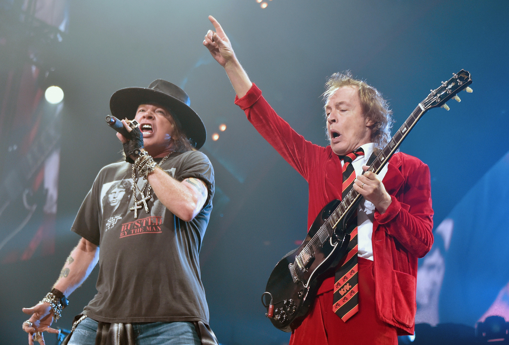
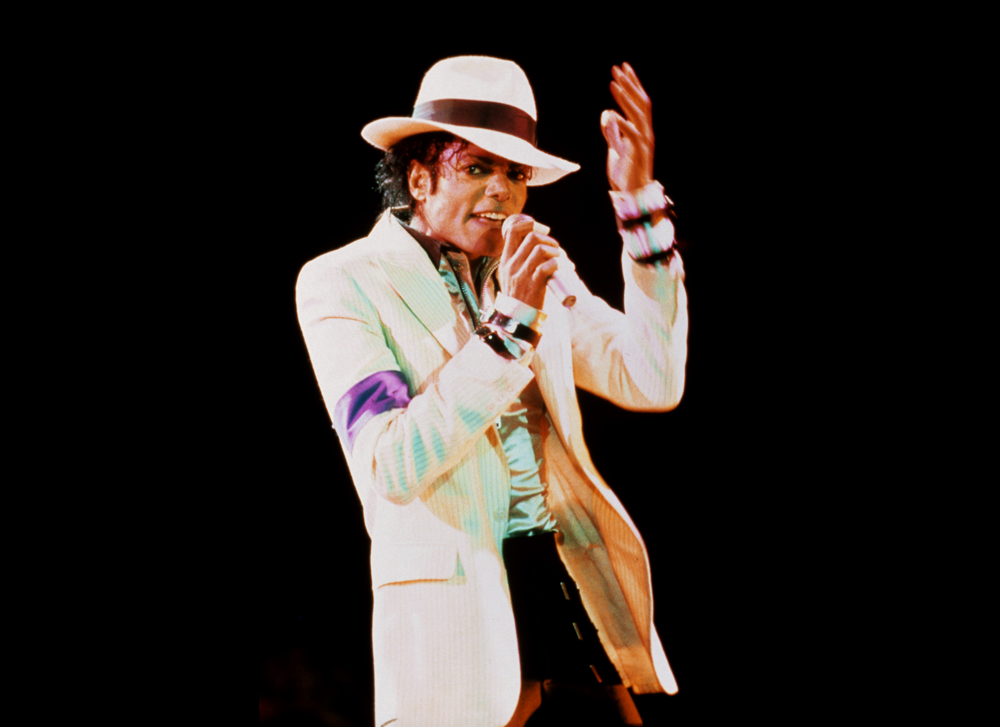

Historia

Cabañas con techos de paja
ACDC es una banda de hard rock australiana formada en 1973 en Sydney. El grupo está formado por los hermanos escoceses Malcolm Young (guitarra rítmica) y Angus Young (guitarra principal), el bajista Cliff Williams y el baterista Phil Rudd.

La noche estrellada
Queen fue una banda británica de rock formada en Londres en 1970. El grupo estuvo formado por el cantante y pianista Freddie Mercury, el guitarrista Brian May, el baterista Roger Taylor y el bajista John Deacon.

Los girasoles
Michael Jackson fue un cantante, compositor, productor discográfico, bailarín y filántropo estadounidense. Conocido como el "Rey del Pop", es considerado una de las figuras culturales más significativas del siglo XX.